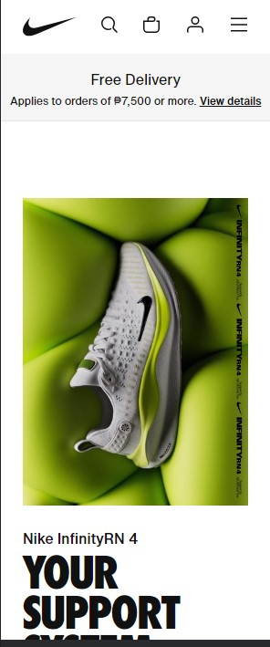

White Space and Clean Desgin
Apple
apple.comIs it even possible to discuss white space design without bringing up Apple? Apple may not have invented white space, but they sure do know how to confidently and effectively use it to generate interest, sales, and impact. With the use of white space, Apple's products, which are works of beauty in and of themselves, allow the visitor to maintain one focus at a time.
Visual Hierarchy
Amazon
amazon.com
Amazon uses visual hierarchy design to improve user experience, streamline navigation, highlight important components, and ultimately increase conversion rates. Amazon strives to make online purchasing for its customers as effective and fun as possible by thoughtfully organizing and displaying material.
PARC: Repetition
Nike
nike.com To establish a consistent and recognized brand identity across all of its product sites and marketing activities, Nike's website employs repetition of its brand logo, typeface, and visual elements.